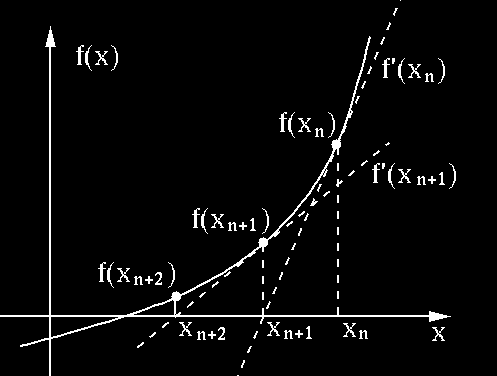
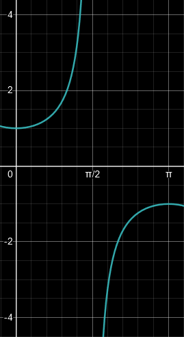
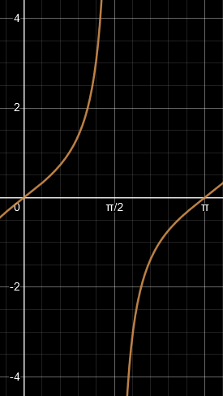

- \cos x=x

- \because intersection in (0,\pi/2)
- \therefore choose x_0=1\in(0,\pi/2)
f'(x)=\lim\limits_{h\to0}\frac{f(x+h)-f(x)}h=\lim\limits_{x\to a}\frac{f(x)-f(a)}{x-a}
f'_-(x)=\lim\limits_{h\to0^-}\frac{f(x+h)-f(x)}h\quad f'_+(x)=\lim\limits_{h\to0^+}\frac{f(x+h)-f(x)}h
given f(x), x, \Delta x, find \Delta y and dy
\begin{aligned} f'(x)&=\frac{dy}{dx}\approx\frac{\Delta y}{\Delta x}=\frac{f(x+\Delta x)-f(x)}{\Delta x}\\ \therefore\;\Delta y&=f(x+\Delta x)-f(x)\\ dy&=f'(x)dx\\ \end{aligned}
the tangent line of f at x=a is L(x)=f(a)+f'(a)(x-a)

> x_{n+1}=x_n-\frac{f(x_n)}{f'(x_n)}approx root of f(x)=x^3-2x-5 (3 decimals) 1. IVT \begin{aligned} \because\;&f(1)=-6<0\quad f(3)=15>0\\ \therefore\;&\text{let }x_0=2\in(1,3) \end{aligned} 2. find derivative f'=\lim\limits_{h\to0}\frac{f(x+h)-f(x)}h=...=3x^2-2 3. iterate (need to find same decimals twice) \begin{aligned} &x_1=x_0-\frac{f(x_0)}{f'(x_0)}=...\approx2.1000\\ &x_2=x_1-\frac{f(x_1)}{f'(x_1)}=...\approx2.0946\\ &x_3=x_2-\frac{f(x_2)}{f'(x_2)}=...\approx\textcolor{aqua}{2.0946} \end{aligned}
\forall c\in\R\quad(c)'=0
\begin{aligned} f(x)&=c\\ f'(x)&=\lim\limits_{x\to c}\frac{c-c}{x-c}\\ &=\lim\limits_{x\to c}\frac0{x-c}=0\quad\blacksquare \end{aligned}
\forall n\in\N\quad (x^n)'=nx^{n-1}
\begin{aligned} (x^n)'&=\lim\limits_{x\to a}\frac{x^n-a^n}{x-a}\\ &=\lim\limits_{x\to a}\frac{(x-a)(x^{n-1}+x^{n-2}a+x^{n-3}a^2+...+a^{n-1})}{x-a}\\ &=\lim\limits_{x\to a}(\overbrace{x^{n-1}+x^{n-2}a+x^{n-3}a^2+...+a^{n-1}}^n)\\ &=x^{n-1}+x^{n-2}x+x^{n-3}x^2+...+x^{n-1}\\ &=nx^{n-1}\quad\blacksquare \end{aligned}
(cf)'=cf'
\begin{aligned} (cf)'(x)&=\lim\limits_{x\to a}\frac{cf(x)-cf(a)}{x-a}\\ &=\lim\limits_{x\to a}c\frac{f(x)-f(a)}{x-a}\\ &=c\lim\limits_{x\to a}\frac{f(x)-f(a)}{x-a}\\ &=cf(x)' \end{aligned}
(f+g)'=f'+g'
\begin{aligned} (f+g)'(x)&=\lim\limits_{x\to a}\frac{f(x)+g(x)-f(a)-g(a)}{x-a}\\ &=\lim\limits_{x\to a}\frac{f(x)-f(a)+g(x)-g(a)}{x-a}\\ &=\lim\limits_{x\to a}\left(\frac{f(x)+f(a)}{x-a}+\frac{g(x)-g(a)}{x-a}\right)\\ &=\lim\limits_{x\to a}\frac{f(x)-f(a)}{x-a}+\lim\limits_{x\to a}\frac{g(x)-g(a)}{x-a}\\ &=f'(x)+g'(x) \end{aligned}
(fg)'=f'g+fg'\\(uvw)'=u'vw+uv'w+uvw'
\begin{aligned} (fg)'(x)&=\lim\limits_{x\to a}\frac{\textcolor{aqua}{f(x)g(x)-f(a)g(a)}}{x-a}\\ &=\lim\limits_{x\to a}\frac{\textcolor{aqua}{f(x)g(x)}\textcolor{lime}{-f(a)g(x)+f(a)g(x)}\textcolor{aqua}{-f(a)g(a)}}{x-a}\\ &=\lim\limits_{x\to a}\frac{(f(x)-f(a))g(x)+f(a)(g(x)-g(a))}{x-a}\\ &=\lim\limits_{x\to a}\frac{f(x)-f(a)}{x-a}\lim\limits_{x\to a}g(x)+\lim\limits_{x\to a}f(a)\lim\limits_{x\to a}\frac{g(x)-g(a)}{x-a}\\ &=f'(x)g(x)+f(x)g'(x)\quad\blacksquare \end{aligned}
\left(\frac fg\right)'=\frac{f'g-fg'}{g^2}
\begin{aligned} \left(\frac fg\right)'&=\left(f\cdot\frac1g\right)'=\frac{f'}g+f\left(\frac1g\right)'=\frac{f'}g-\frac {fg'}{g^2}=\frac{f'g-fg'}{g^2} \end{aligned}
(f\circ u)'=f'(u)u'\quad\frac{df}{dx}=\frac{df}{du}\frac{du}{dx}
\begin{aligned} (f\circ g)'(x)&=\lim\limits_{x\to a}\frac{f(g(x))-f(g(a))}{x-a}\\ &=\lim\limits_{x\to a}\frac{f(g(x))-f(g(a))}{g(x)-g(a)}\frac{g(x)-g(a)}{x-a}\\ \because\;&g(x)\text{ is continuous}\\ \therefore\;&=\lim\limits_{g(x)\to g(a)}\frac{f(g(x))-f(g(a))}{g(x)-g(a)}\lim\limits_{x\to a}\frac{g(x)-g(a)}{x-a}\\ &=f'(g(x))g'(x)\quad\blacksquare \end{aligned}
- diff each term in terms of x
- put all y' on one side
- isolate y' (optional)
\begin{aligned} x^2+xy-y^3&=4\\ (x^2+xy-y^3)'&=(4)'\\ 2x+y+xy'-3y^2y'&=0\\ y'(x-3y^2)&=-2x-y\\ y'&=\frac{2x+y}{3y^2-x} \end{aligned}
L(x)=b+y'(a,b)(x-a)\quad b=y(a)
find tangent lines for y^2=x^3-4x where x=a=-1 1. find b=y(a) \begin{aligned} (y(-1))^2&=(-1)^3-4(-1)=3\\ y(-1)&=\pm\sqrt3=b\\ \end{aligned} 2. find y' \begin{aligned} (y^2)'&=(x^3-4x)'\\ 2yy'&=3x^2-4\\ y'&=\frac{3x^2-4}{2y}\\ \end{aligned} 3. find y'(a,b) and L(x) \begin{aligned} y'(-1,\sqrt3)&=\frac{3(-1)^2-4}{2\sqrt3}=\frac{-1}{2\sqrt3}\\ \textcolor{aqua}{L_1(x)}&=\sqrt3-\frac1{2\sqrt3}(x+1)\\ y'(-1,-\sqrt3)&=\frac{3(-1)^2-4}{-2\sqrt3}=\frac1{2\sqrt3}\\ \textcolor{aqua}{L_2(x)}&=-\sqrt3+\frac1{2\sqrt3}(x+1)\\ \end{aligned}
(a^u)=(\ln a)a^uu'\quad\textcolor{aqua}{a>0}
\begin{aligned} \because\;&\lim\limits_{h\to0}\frac{e^h-1}h=1\\ \therefore\;&(e^x)'=\lim\limits_{h\to0}\frac{e^{x+h}-e^x}h=e^x\lim\limits_{h\to0}\frac{e^h-1}h=e^x\quad\blacksquare \end{aligned}\\ \begin{aligned} (a^x)'=(e^{x\ln a})'=e^{x\ln a}(x\ln a)'=(\ln a)a^x \end{aligned}
(\log_au)'=\frac{u'}{(\ln a)u}\quad(\ln u)'=(\ln|u|)'=\frac{u'}u\quad\textcolor{aqua}{1\ne a>0}
\begin{aligned} x&=a^{\log_ax}\\ 1&=a^{\log_ax}(\ln a)(\log_ax)'\\ 1&=x\ln a(\log_ax)'\\ (\log_ax)'&=\frac1{(\ln a)x} \end{aligned}
\begin{aligned} x&=e^{\ln x}\\ 1&=e^{\ln x}(\ln x)'\\ 1&=x(\ln x)'\\ (\ln x)'&=\frac 1x \end{aligned}
\begin{aligned} (\sin x)'&=\cos x&& (\cos x)'=-\sin x&&(\tan x)'=\sec^2x\\ (\csc x)'&=-\csc x\cot x&&(\sec x)'=\sec x\tan x&&(\cot x)'=-\csc^2x\\ \end{aligned}
\begin{aligned} (\cos x)'&=\lim\limits_{h\to0}\frac{\cos(x+h)-\cos x}h=\lim\limits_{h\to0}\frac{\cos x\cos h-\sin x\sin h-\cos x}h\\ &=\cos x\lim\limits_{h\to0}\frac{\cos h-1}h-\sin x\lim\limits_{h\to0}\frac{\sin h}h\\ &=\cos x\cdot0-\sin x\cdot1=-\sin x \end{aligned}
\begin{aligned} (\text{asin }u)'&=\frac{u'}{\sqrt{1-u^2}}&&(\text{atan }u)'=\frac{u'}{1+u^2}&&(\text{asec }u)'=\frac{u'}{|u|\sqrt{u^2-1}}\\ (\text{acos }u)'&=-(\text{asin }u)'&&(\text{acot }u)'=-(\text{atan }u)'&&(\text{acsc }u)'=-(\text{asec }u)' \end{aligned}
(\arcsin x)' (inverse) \begin{aligned} \sin(\text{asin }x)&=x\\ (\sin(\text{asin }x))'&=1\\ \cos(\text{asin }x)(\text{asin }x)'&=1\\ (\text{asin }x)'&=\frac1{\cos(\text{asin }x)}\\ &=\frac1{\sqrt{1-\sin^2(\text{asin }x)}}\\ &=\frac1{\sqrt{1-x^2}} \end{aligned}
(\arctan x)' (impl) \begin{aligned} y=\text{atan }x\implies x&=\tan y\\ 1&=\sec^2yy'\\ y'&=\frac1{\sec^2y}=\frac1{1+\tan^2y}=\frac1{1+x^2} \end{aligned}
(\text{arcsec }x)' (draw
graph) | sec(x) | tan(x) | | :—————–: |
:—————–: | |

|
|\begin{aligned} y=\text{asec }x\implies x=&\sec y,\quad y\in[0,\pi]\setminus\{\pi/2\}\\ 1=&\sec(y)\tan(y)y'\\ y'=&\frac1{\sec y\tan y}=\frac1{x\tan y}\\ \because\;\tan^2y=\sec^2y-1\implies\tan y=&\pm\sqrt{\sec^2y-1}\\ \tan y=&\pm\sqrt{x^2-1}\\ \therefore\;y\in[0,\pi/2)\Rarr\tan y>0\implies y'=&\frac1{x\sqrt{x^2-1}}\\ y\in(\pi/2,\pi]\Rarr\tan y<0\implies y'=&\frac1{-x\sqrt{x^2-1}}\\ \therefore\;y'=&\frac1{|x|\sqrt{x^2-1}} \end{aligned}
\sinh(x)=\frac{e^x-e^{-x}}2\quad\cosh(x)=\frac{e^x+e^{-x}}2\quad\tanh(x)=\frac{\sinh(x)}{\cosh(x)}\\ \cosh^2x-\sinh^2x=1\\\,\\ \begin{aligned} (\sinh x)'&=\cosh(x)&&(\text{csch }x)'=-\text{csch }(x)\text{ coth}(x)\\ (\cosh x)'&=\sinh(x)&&(\text{sech }x)'=-\text{sech }(x)\tanh(x)\\ (\tanh x)'&=\text{sech}^2(x)&&(\text{coth }x)'=-\text{csch}^2(x)\\ \end{aligned}
(\text{asinh }u)'=\frac{u'}{\sqrt{u^2+1}}\quad(\text{acosh }u)'=\frac{u'}{\sqrt{u^2-1}}\quad(\text{atanh }u)'=\frac{u'}{1-u^2}
ln() for Factorised\begin{aligned} y&=\frac{\textcolor{aqua}{(x+2)^3}\textcolor{lime}{(x^2-1)^4}}{\textcolor{aqua}{(x+5)}\textcolor{lime}{(x-7)^3}\textcolor{aqua}{(x^2+x+1)^5}}\\ \ln|y|&=\textcolor{aqua}{3\ln|x+2|}+\textcolor{lime}{4\ln|x^2-1|}-\textcolor{aqua}{\ln|x+5|}-\textcolor{lime}{3\ln|x-7|}-\textcolor{aqua}{5\ln|x^2+x+1|}\\ \frac{y'}y&=\frac3{x+2}+\frac{4(x^2-1)'}{x^2-1}-\frac1{x+5}-\frac3{x-7}-\frac{5(x^2+x+1)'}{x^2+x+1}\\ y'&=y\left(\frac3{x+2}+\frac{8x}{x^2-1}-\frac1{x+5}-\frac3{x-7}-\frac{5(2x+1)}{x^2+x+1}\right) \end{aligned}
\begin{aligned} (x+x^2+x^3)''=(1+2x+3x^2)'=2+6x \end{aligned}
y=\begin{cases} x^2& x<1\\ 1+\ln x& x\ge1 \end{cases}
\begin{aligned} y&=\sqrt{x\ln|2^x+1|}\\ y'&=\frac{(x\ln|\overbrace{2^x+1}^u|)'}{2y}=\frac1{2y}\left(\ln u+\frac{xu'}u\right)\\ &=\frac{u\ln u+xu'}{2uy}=\frac{u\ln u+x2^x\ln 2}{2uy}\\ &=\frac{2^x+1\ln(2^x+1)+(\ln 2)2^xx}{2(2^x+1)\sqrt{x\ln(2^x+1)}} \end{aligned}
\begin{aligned} y&=\sin^2(\cos\sqrt{\text{atan }(yx)})&&A=2\sin(\cos\sqrt{\text{atan }(yx)})\\ y'&=A(\sin(\cos\sqrt{\text{atan }(yx)}))'&&B=\cos(\cos\sqrt{\text{atan }(yx)})\\ &=AB(\cos\sqrt{\text{atan }(yx)})'&&C=-\sin\sqrt{\text{atan }(yx)}\\ &=ABC(\sqrt{\text{atan }(yx)})'&&D=\frac1{2\sqrt{\text{atan }(yx)}}\\ &=ABCD(\text{atan }(yx))'&&E=\frac1{y^2x^2+1}\\ &=ABCDE(yx)'&&(yx)'=y'x+y\\ y'&=ABCDExy'+ABCDEy\\ &=\frac{ABCDEy}{1-ABCDEx} \end{aligned}
\begin{aligned} y&=\sqrt[4]{\frac{1+\tanh x}{1-\tanh x}}\\ \frac{1+\tanh x}{1-\tanh x}&=\frac{1+\frac{\sinh x}{\cosh x}}{1-\frac{\sinh x}{\cosh x}}=\frac{\cosh x+\sinh x}{\cosh x-\sinh x}=\frac{e^x+e^{-x}+e^x-e^{-x}}{e^x+e^{-x}-e^x+e^{-x}}=e^{2x}\\ y'&=\left(\sqrt[4]{e^{2x}}\right)'=(e^{x/2})'=\frac{e^{x/2}}2 \end{aligned}
y=f(a)-\frac{x-a}{f'(a)}